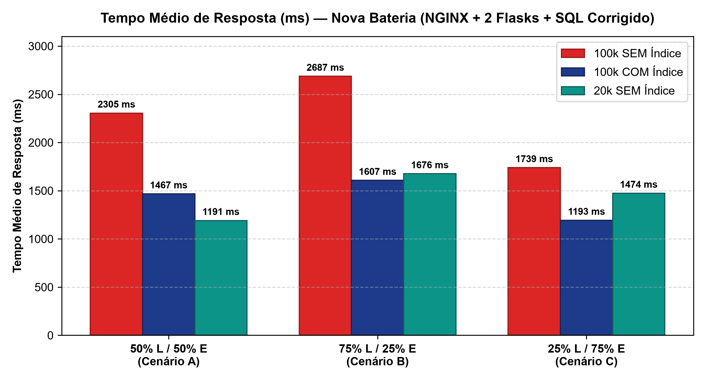
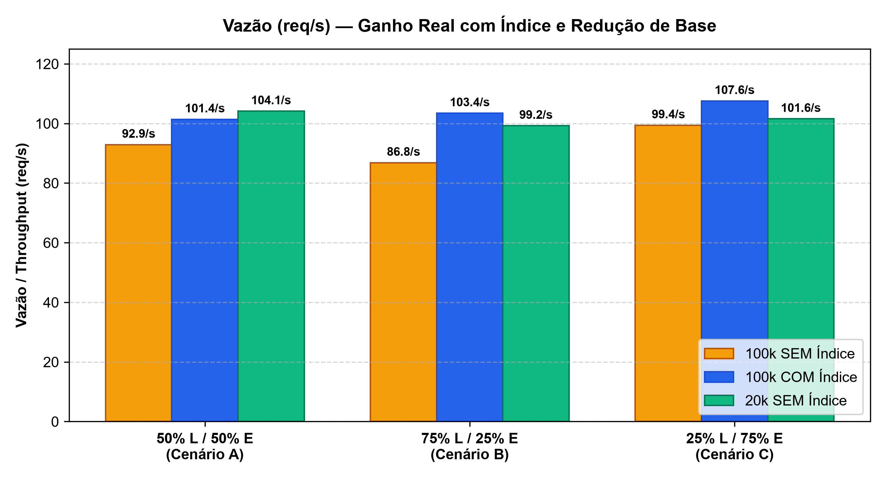
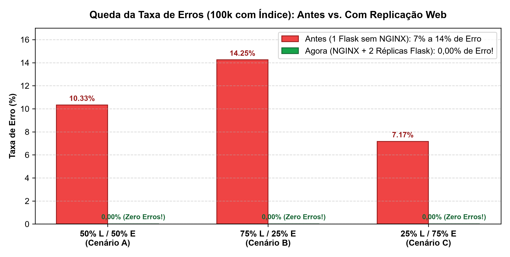

| Configuração do BD | Cenário | Taxa de Erro | Média Leitura | Média Escrita | Média Total | Latência P95 | Vazão (req/s) |
|---|---|---|---|---|---|---|---|
| 100k SEM Índice | A (50% L / 50% E) | 0,00% | 2.278,7 ms | 2.331,1 ms | 2.304,9 ms | 3.401,9 ms | 92,89 req/s |
| 100k SEM Índice | B (75% L / 25% E) | 0,00% | 2.664,2 ms | 2.755,6 ms | 2.687,1 ms | 4.280,9 ms | 86,84 req/s |
| 100k SEM Índice | C (25% L / 75% E) | 0,00% | 1.716,7 ms | 1.746,4 ms | 1.738,9 ms | 2.655,6 ms | 99,41 req/s |
| 100k COM Índice | A (50% L / 50% E) | 0,00% | 1.505,5 ms | 1.428,6 ms | 1.467,0 ms | 2.192,9 ms | 101,41 req/s |
| 100k COM Índice | B (75% L / 25% E) | 0,00% | 1.628,2 ms | 1.543,5 ms | 1.607,1 ms | 2.542,4 ms | 103,45 req/s |
| 100k COM Índice | C (25% L / 75% E) | 0,00% | 1.205,0 ms | 1.189,1 ms | 1.193,1 ms | 1.850,9 ms | 107,56 req/s |
| 20k SEM Índice | A (50% L / 50% E) | 0,00% | 1.162,5 ms | 1.219,7 ms | 1.191,1 ms | 1.825,6 ms | 104,12 req/s |
| 20k SEM Índice | B (75% L / 25% E) | 0,00% | 1.660,8 ms | 1.720,8 ms | 1.675,8 ms | 2.545,0 ms | 99,24 req/s |
| 20k SEM Índice | C (25% L / 75% E) | 0,00% | 1.416,0 ms | 1.493,2 ms | 1.473,9 ms | 2.346,9 ms | 101,56 req/s |



WHERE cidade = 'Manaus', o banco 100k COM Índice usou Index Scan e reduziu o tempo médio de 2.687 ms para 1.607 ms no cenário de leitura intensa (75/25), aumentando a vazão de 86,84 req/s para 103,45 req/s.